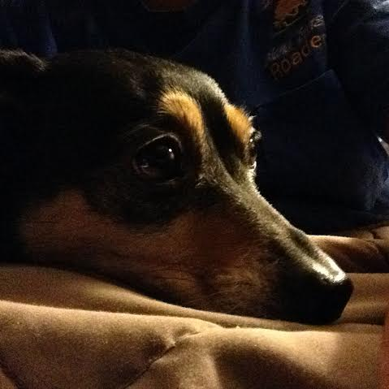
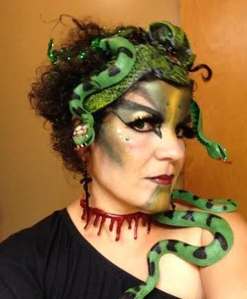

About Lourdes
Lourdes Shuart has over 25 years of work experience. Her work experience began in the United States Navy between 1980-1990, where she was just scratching the surface of computers and what they can do. While on active duty, Lourdes was able to gain experience operating big-frame, IBM computers and varied technical/customized equipment. In the early 1990s she entered the civilian sector in search of a job involving customer service and the office environment. She landed on a job as a Receptionist with the City of Burlington and worked there a little over six years. During that time, she was promoted to an Accounting Technician where she was able to grasp basic accounting techniques and principles using customized/municipal software programs.
After some time, Lourdes desired to expand her knowledge working with office computers, and sought an ATA degree in Office and Business Technology at Skagit Valley College. She emphasized her studies in computer software by attaining a certificate as a Microcomputer Specialist.
While searching for a local job and going to school, Lourdes managed to work part-time as a Bookkeeper for the community pool and then as a Domestic Violence Counselor. Both of these positions were short lived since Lourdes wanted to explore job opportunities within the transportation field and landed on a job as an Administrative Assistant with Island Transit in Coupeville, Washington. She quickly adapted because of her previous work experience and knowledge in accounting.
Within four years, she was transferred to the Operations department to assist the Operations Manager with database management and the Commercial Drivers License program. Her most recent accomplishment has been learning to operate the BrightSign units purchased during the newly built Island Transit facilities. Her next project is to test the BrightSign's Geofencing capabilities and incorporate them into the Island Transit buses. According to Jeff Hastings, BrightSign, CEO regarding geofencing, The increased effectiveness of messages and signage that employ geofencing and geo-location features are driving the development of software and player firmware that support this marketing initiative. Delivering a more relevant and targeted message to your audience spells success.
Many businesses have experienced click-through rates on geofencing campaigns that are as much as 70% higher than standard ads.
-Noted Source: Instant.ly
Lourdes' Interests
Click on the links below to check out the assignments Lou's been working on in her HTML5 class and get a glimpse of some of the things she enjoys in life:
LOURDES' INTERESTS - CLASS ASSIGNMENTS AND FAVORITE THINGS

Lucky is the name of her mini daschund. She is very sweet, lovable and extemely intelligent. Lucky knows various tricks and was tought many commands. She obeys them, most of the time. Lucky even plays soccer ball! True story.

Lilies are one of Lourdes' favorite flowers. She loves the idea that they not only come in various colors, shapes and sizes, but that some are fragrant as well. Lilies are very easy to grow and come back every year. The worst part about growing anything in Lourdes' yard is that fact that she has to keep critters away and fight off the elements. This has been a very dauting and tedious job for Lourdes for quite some time. Lourdes' also loves Orchids, a very particular and finicky flower. She plans to invest in a greenhouse someday where it may make it easier for her to ward off the critters and give special attention to growing flowers like orchids. She also plans to grow various herbs for cooking. Nothing beats fresh herbs for cooking!
Don't forget to click on Page 3 to see what else Lourdes does to keep herself busy

Although this a new and interesting concept for Lourdes, this is something should would not mind researching a little more about.
If Lourdes has to choose a favorite duck besides "Daffy and Donald", should would most pick the "Mallard". A beautifully colored duck of interesting characteristic; nicely dressed, looking like a ganster in his green fidor, grey colored suit and brown vest!

Lourdes can't wait for this time of the year. She plans a year in advance as to what she wants to be. She recently became more involved in the dress up of Halloween about three years ago while dressing up at work alongside other co-workers. Below one of her coworkers joins in the fun in 2014 with her rendition of "Ursula" a character from Disney's "The Little Mermaid". Her costume was out of this world! The other three pictures are Lourdes dressed as Medusa, a Cavewoman, and Betty Boop. Lourdes believes it's a day we can let our ourselves be creative and silly at the same time, all while having an excuse. She plans to visit her sister in Rio Rancho, New Mexico where they both intend to dress up for the occassion. They have already figured out what their costumes are going to be. Fun, fun, fun!
Lourdes loves a good glass of fine wine. She enjoys going to vineyards and exploring the flavors and uniqueness of various wines. Eventhough she loves Washington wines, she plans to visit "Napa Valley" one day to discover the flavors in their back yard. Some of her favorite Washington wines are: 14Hands, Ste Michelle Chardonay, and Columbia Crest. She especially loves a good merlot or chardonnay.

Lourdes became a football fan after noticing how excited others were about the game, especially during the time the Seahawks made history in winning the 2014 Superbowl. It is especially exciting to see how the games play out. The most exciting time is when a game only has seconds left. Go Hawks!